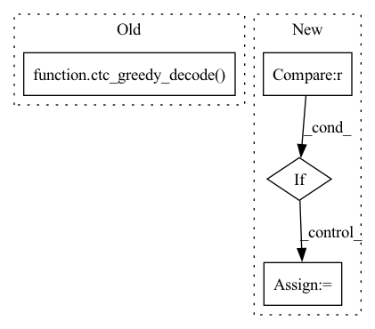

Pattern ID :23978
Before Change
if stage != "train":
ind2lab = params.train_loader.label_dict["phn"]["index2lab"]
sequence = ctc_greedy_decode( pout, pout_lens, blank_id=-1)
// convert sequence back to 1 state per phoneme style
sequence = [[x // 3 for x in utt] for utt in sequence]
sequence = convert_index_to_lab(sequence, ind2lab)
After Change
)
loss = -sum_alpha_T.sum()
elif params.training_type == "ctc" :
loss = params.compute_cost_ctc(pout, phns, pout_lens, phn_lens)
elif params.training_type == "viterbi":
prev_alignments = params.aligner.get_prev_alignments(
ids, pout, pout_lens, phns, phn_lens
)
prev_alignments = prev_alignments.to(params.device)In pattern: SUPERPATTERN
Frequency: 3
Non-data size: 4
Instances Fragment ID: 74546513
Project Name: speechbrain/speechbrain
Commit Name: 7e8e3d58f3eb8d6e92cc58ee74cd8d0104374026
Time: 2020-06-17
Author: elenaras@yahoo.co.uk
File Name: recipes/TIMIT/ASR_alignment/experiment.py
M Class Name: ASR
N Class Name: ASR
M Method Name: compute_objectives(4)
N Method Name: compute_objectives(4)
M Parent Class: sb.core.Brain
N Parent Class: sb.core.Brain
M File Name: recipes/TIMIT/ASR_alignment/experiment.py
N File Name: recipes/TIMIT/ASR_alignment/experiment.py
M Start Line: 55
M End Line: 72
N Start Line: 53
N End Line: 85
Before Change
stats = {}
if stage != "train":
seq = ctc_greedy_decode( predictions, lens, blank_id=-1)
phns = undo_padding(phns, phn_lens)
stats["PER"] = wer_details_for_batch(ids, phns, seq)
return loss, statsAfter Change
predictions, lens = predictions
ids, phns, phn_lens = targets
if (
self.flat_start_training or stage == "test"
): // TODO: unsure about stage == "test"
(
flat_start_batch,
flat_start_lens,
) = viterbi_aligner.get_flat_start_batch(phns, phn_lens, lens)
loss = params.compute_cost(
predictions, flat_start_batch, flat_start_lens
)
else:
viterbi_batch = viterbi_aligner.get_viterbi_batch(lens)
loss = params.compute_cost(predictions, viterbi_batch, lens)
alignments = viterbi_aligner.calc_viterbi_alignments(phns, phn_lens) Fragment ID: 74546515
Project Name: speechbrain/speechbrain
Commit Name: cc600a8d98ce0d7f63e3ceef4dce88dbd7928a63
Time: 2020-06-01
Author: rastorge@eos18.server.mila.quebec
File Name: recipes/minimal_examples/neural_networks/ASR_alignment/example_asr_alignment_experiment.py
M Class Name: AlignBrain
N Class Name: AlignBrain
M Method Name: compute_objectives(4)
N Method Name: compute_objectives(4)
M Parent Class: sb.core.Brain
N Parent Class: sb.core.Brain
M File Name: recipes/minimal_examples/neural_networks/ASR_alignment/example_asr_alignment_experiment.py
N File Name: recipes/minimal_examples/neural_networks/ASR_alignment/example_asr_alignment_experiment.py
M Start Line: 35
M End Line: 45
N Start Line: 41
N End Line: 62
Before Change
stats = {}
if stage != "train":
ind2lab = params.train_loader.label_dict["char"]["index2lab"]
sequence = ctc_greedy_decode( pout, pout_lens, blank_id=-1)
sequence = convert_index_to_lab(sequence, ind2lab)
chars = undo_padding(chars, char_lens)
chars = convert_index_to_lab(chars, ind2lab)
cer_stats = edit_distance.wer_details_for_batch(After Change
chars, char_lens = chars.to(self.device), char_lens.to(self.device)
loss = self.hparams.compute_cost(pout, chars, pout_lens, char_lens)
if stage != sb.Stage.TRAIN :
pred_chars = sb.decoders.ctc_greedy_decode(pout, pout_lens)
self.cer_metrics.append(
ids, pred_chars, chars, None, char_lens, self.hparams.ind2lab
) Fragment ID: 74546526
Project Name: speechbrain/speechbrain
Commit Name: 0b05205f7431990513e6a4c0a9dbb4559690d15d
Time: 2020-10-01
Author: plantinga.peter@protonmail.com
File Name: recipes/Voicebank/ASR/CTC/experiment.py
M Class Name: ASR
N Class Name: ASR
M Method Name: compute_objectives(4)
N Method Name: compute_objectives(4)
M Parent Class: sb.Brain
N Parent Class: sb.core.Brain
M File Name: recipes/Voicebank/ASR/CTC/experiment.py
N File Name: recipes/Voicebank/ASR/CTC/experiment.py
M Start Line: 49
M End Line: 63
N Start Line: 28
N End Line: 36